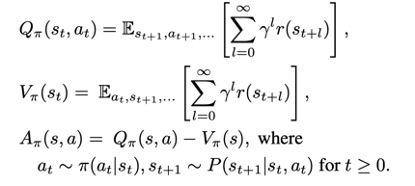

TRPO
文章全名为《Trust region policy optimization》，描述了一个迭代过程来优化策略，保证单调改进。通过对理论证明的过程进行若干近似，提出一种新的实用算法，称为信赖域策略优化(TRPO)。这个算法是类似的采用自然梯度方法对神经网络等大型非线性策略进行优化是有效的。
Introduction
强化学习中的回报函数如下：
值函数定义如下：

表示在状态下采取动作a_t的奖励，表示状态时的奖励，可以理解为各种动作产生的均值，这里定义的表示状态下使用动作产生的奖励，可以用描述整个动作的优劣。
将新的策略所对应的回报函数分解成旧的策略所对应的回报函数以及其他项:
为了方便说明，定义为：

重写之前的期望回报公式
其中,为（s,a）的联合概率，为求动作a的边际分布，也就是说在状态$s$处对整个动作空间求和；为求状态的边际分布，对整个状态空间求和。
公式（2）说明了从到通过添加一个非负的优势期望函数。
注意这是由新分布产生的，对新分布有很强的依赖性。这个公式其实在应用中完全无法达到，因为我们是为了得到新的策略，所以这里的其他项完全无从所知，为此，TRPO采取了一些技巧来解决这个问题。
TRPO用到的四个技巧
TRPO用到的第一个技巧便是对状态分布进行处理。我们忽略状态分布的变化，依然采用旧的策略所对应的状态分布。这个技巧是对原代价函数的第一次近似。其实，当新旧参数很接近时，我们将用旧的状态分布代替新的状态分布也是合理的。
这里用代替了，因为二者的差距并不是很大。
TRPO的第二个技巧便是利用重要性采样处理动作分布
TRPO的第三个技巧便是利用平均KL散度代替最大KL散度：
TRPO的第四个技巧是对约束问题二次近似，非约束问题一次近似，这是凸优化的一种常见改法。最后TRPO利用共轭梯度的方法进行最终的优化。
最后的优化函数变为：

参考
[1]Schulman J, Levine S, Abbeel P, et al. Trust region policy optimization[C]//International conference on machine learning. 2015: 1889-1897. [2] 深入浅出强化学习:原理入门 / 郭宪，方勇纯编著. —北京:电子工业出版社，2018.1 ISBN 978-7-121-32918-0